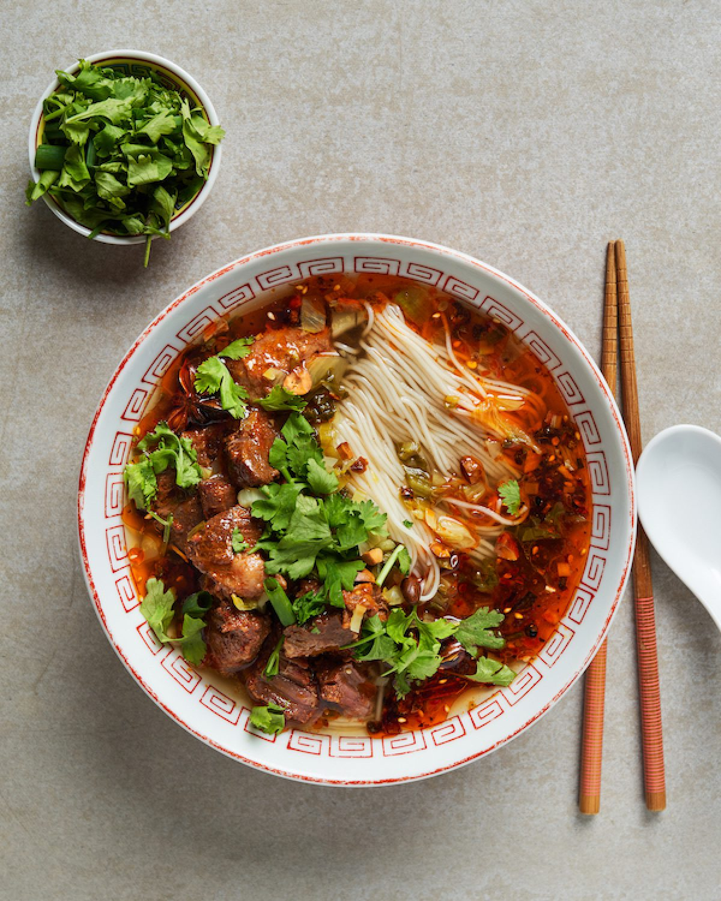

What are Braised Beef Noodles?
There are many types of braised beef noodles, including Lanzhou beef noodles, across East and Southeast Asia. They almost always contain a vegetable like cilantro or bok choy, very aromantic broth and braised beef, and chewy noodles that you can often buy hand-pulled.
Why is it my favorite food?
- There is a restaurant near my house called Min's Noodle House that serves Chungking Beef Noodles, and it's been the only thing I order there for the last few years.
- In addition, it has led to me ordering it whenever I go to Hong Kong/China to visit family.
How is it made?
Below is a video of how to make Chungking Beef noodles! Make sure you have the proper ingredients!.
Ingredients listed in the tutorial:
For the noodles and broth:
- High-gluten flour
- Cold water
- Salt
- Cooking Oil
- Lye water
- Vegetable Oil
- Whole dried red chillies
- Whole Sichuan peppercorns
- Light soy sauce
- Black vinegar
- Black sesame oil
For the toppings
- Canned Chickpeas
- Stock (vegetable or chicken)
- Fresh ginger
- Fresh garlic
- Spring onions
- Bok Choy
- Green beans
- Tianjin preserved cabbage
- Fresh corlander leaves
What does it look like?
Below is a picture of a bowl of Chungking noodles, which is a type of braised beef noodles I often eat:
